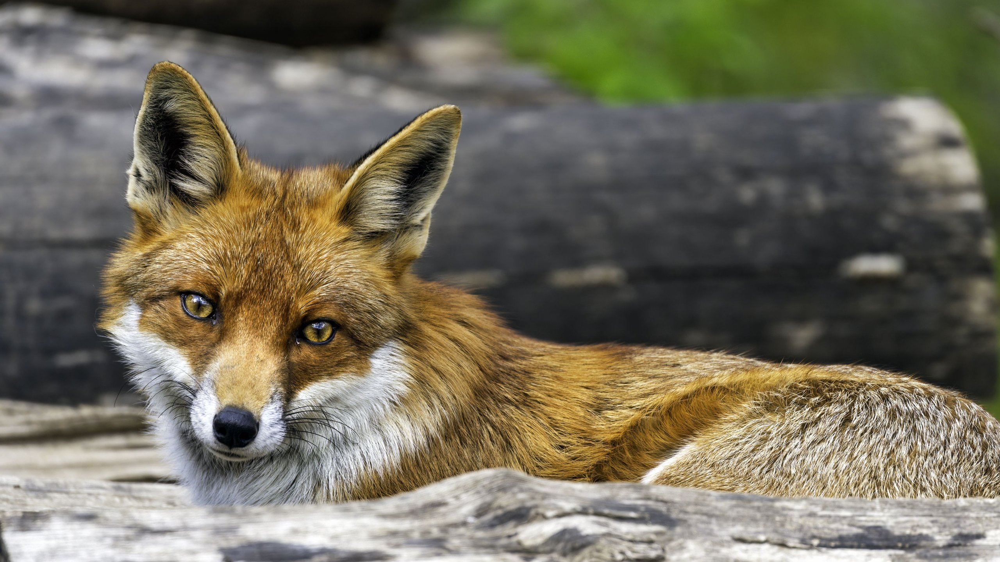

Bajas la cabeza y das unos pasos hacia atrás. No viniste a pelear, y tu cuerpo aún no está en condiciones para enfrentamientos. Este zorro claramente llegó primero y tiene derecho a defender su territorio.
El zorro rojizo observa tu lenguaje corporal. Entiende que no sos una amenaza. Su postura se relaja ligeramente, aunque todavía te vigila con atención.
Hace un sonido gutural, no agresivo pero firme. Te está diciendo que sigas tu camino. No te hará daño si te vas ahora.
Te retiras lentamente, manteniendo contacto visual respetuoso hasta que estás lo suficientemente lejos. Aprendiste una lección importante: a veces la sabiduría está en retirarse, no en pelear.
Buscar un territorio más pequeño sin dueño - algo más modesto